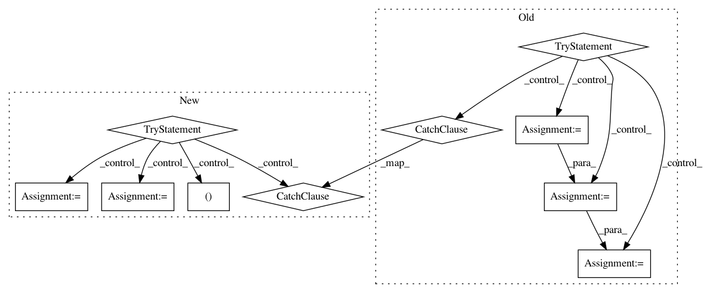

895187880fb16d41133942aae7a935698c6f0a8c,niftynet/utilities/get_niftynet_version.py,,get_niftynet_version,#,2
Before Change
def get_niftynet_version():
Return a user-visible string describing the product version
try:
from subprocess import check_output, CalledProcessError
// Describe the version relative to last tag
command_git = ["git", "describe", "--match", "v[0-9]*"]
version_string = check_output(command_git).decode().rstrip()
// Exclude the "v" for PEP440 conformity, see
// https://www.python.org/dev/peps/pep-0440///public-version-identifiers
version_string = version_string[1:]
// Replace first - with + to match PEP440 local version identifier standard
version_string = version_string.replace("-", "+", 1)
except:
try:
import pkg_resources
version_string = pkg_resources.get_distribution("niftynet").version
except:
version_string = "unknown"
return "NiftyNet version " + version_string
After Change
// Attempt to get the version string from the git repository
try:
version_buf, version_git, command_git = get_niftynet_git_version()
version_string = version_git
except:
version_string = None
// If we cannot get a git version, attempt to get a package version
if not version_string:
try:
import pkg_resources
version_string = pkg_resources.get_distribution("niftynet").version
In pattern: SUPERPATTERN
Frequency: 3
Non-data size: 10
Instances
Project Name: NifTK/NiftyNet
Commit Name: 895187880fb16d41133942aae7a935698c6f0a8c
Time: 2017-08-18
Author: t.doel@ucl.ac.uk
File Name: niftynet/utilities/get_niftynet_version.py
Class Name:
Method Name: get_niftynet_version
Project Name: OpenMined/PySyft
Commit Name: 4cf7f921f08d59ad28bd41c058a5ae2dd39a2b98
Time: 2020-09-16
Author: me@madhavajay.com
File Name: src/syft/lib/generic.py
Class Name: ObjectConstructor
Method Name: install_id_attribute
Project Name: NifTK/NiftyNet
Commit Name: 61a0663a45beb2e59f6a549c51d55940c80734e3
Time: 2018-03-05
Author: rmaplue@ucl.ac.uk
File Name: niftynet/io/image_as_nibabel.py
Class Name:
Method Name: